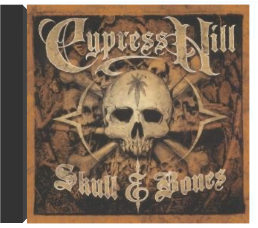

skull & bonescypress hill  Printemps 2000, retour à la Colline aux cyprès avec un cinquième album (sixième si l'on compte le Best Of en espagnol) à la formule inédite : double CD ; le premier, rap ; le second, rock tendance metal. Entièrement produit par DJ Muggs, comme d'habitude, Skull & Bones baigne dans un climat oppressant strié d'éclairs morbides, tels que les apprécie le combo d'East LA. Beats sans strass ni paillettes, arpèges inquiétants, nappes annonciatrices de drame imminent, les ingrédients du cocktail Cypress Hill restent inchangés, toujours réunis dans un groove maléfique que chevauchent les deux rappeurs B-Real et Sen Dog. Sur le deuxième CD, la scansion se durcit et le son se charge de tension électrique par l'intermédiaire des guitares démoniaques de Fear Factory, Downset et autres SX-10 (le groupe fusion de Sen Dog). Une incartade rock qu'on sentait venir depuis 1992 et leur collaboration avec Sonic Youth et Pearl Jam sur la BO de Judgement Night ainsi que leur participation aux festivals de Lollapalooza et Woodstock II. Et une évolution somme toute logique pour un groupe dont l'image doit beaucoup au Grateful Dead et au death metal. —José Guerreiro  homeworkdaft punk homeworkdaft punk Souvent imité, jamais égalé, "Homework" reste LE disque de référence en matière de house filtrée et de funky groove scratché, roulé, haché, trituré. D'abord sorti sous forme de single chez les Ecossais de Soma, le fameux maxi "Da Funk/Rollin' & Scratchin'", pure énergie noisy rehaussée de boucles disco et de rythmes irrésistiblement groovy, fut le précurseur d'une mode sans précédent, élevant les nonchalants Daft Punk au rang de grands initiateurs de la fameuse "french touch". Au- delà d'un son personnel et accrocheur, leur musique a définitivement sorti la techno de son ancrage underground, apportant ses lettres de noblesse aux productions estampillées "dancefloor", ainsi qu'une rare crédibilité auprès du public étranger. Indispensable. —Stéphanie Lopez  random access memoriesdaft punk random access memoriesdaft punk Stellar 2013 album ... their first in 8 years! Cameos by Pharrell Williams (N*E*R*D), Julian Casablancas (The Strokes), Panda Bear (Animal Collective), Nile Rodgers (Chic), Giorgio Moroder, Paul Wi |


 Made with Delicious Library
Made with Delicious LibraryNancy, State zipflap congrotus delicious library Thomas, Julien